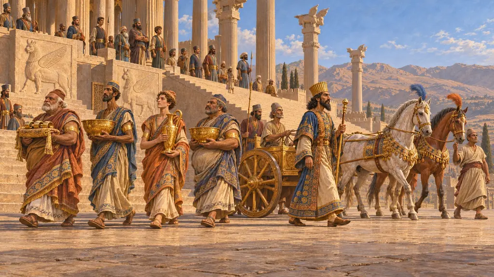
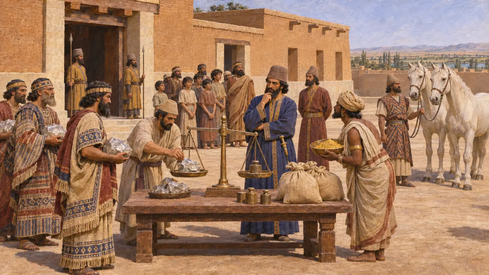
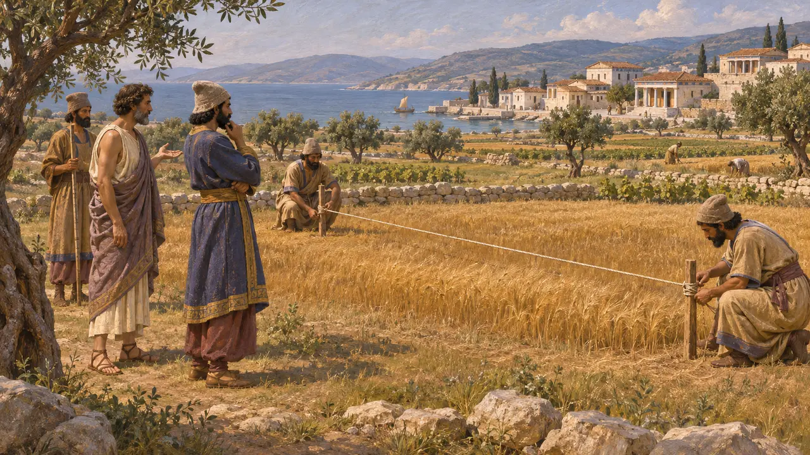
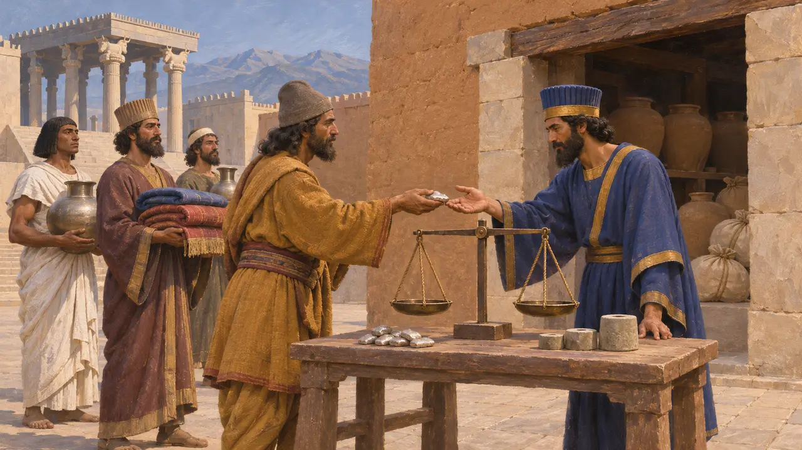
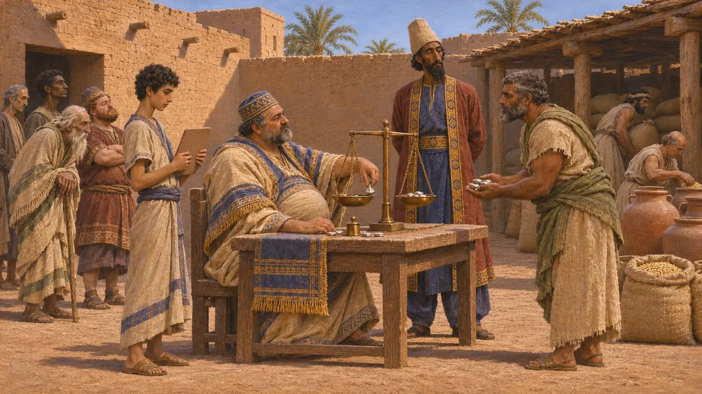
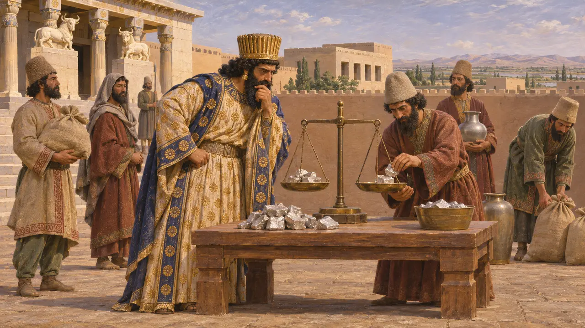

Encyclopédie › Batailles et événements

L'évaluation du tribut par Darius
La division de l'empire par Darius Ier en districts tributaires, vers 518 av. J.-C.
Au début de son règne, Darius Ier fixa des versements annuels pour les peuples sujets, regroupés en districts qu'Hérodote appelle des satrapies. Hérodote affirme que cela remplaça les présents offerts sous Cyrus et Cambyse, et sa liste de districts et de sommes est la description antique la plus complète du tribut perse. Ces revenus contribuaient à financer la cour, les armées et les travaux du Roi.
Dans le jeu : Le jeu présente un décret d'environ 518 av. J.-C. fixant des redevances en argent, les 400 talents de l'Ionie s'interrompant lors de la révolte. Hérodote ne donne aucune date, certains peuples payaient en or ou en nature, et l'interruption est déduite, non attestée.

Vingt provinces chez Hérodote
Récit antiqueHérodote dit que Darius créa vingt provinces, chacune sous un gouverneur, et fixa ce que chacune devait, surtout en argent compté en talents babyloniens. Les Indiens payaient 360 talents de poudre d'or, la Babylonie 1 000 talents d'argent et 500 garçons destinés à être faits eunuques, et la Cilicie 500 talents avec 360 chevaux blancs. Il donne le total général de 14 560 talents eubéens. La Perside elle-même ne payait aucun tribut, et certains peuples envoyaient des dons à la place.
Herodotus 3.89-97

La part de l'Ionie et l'arpentage après la révolte
Récit antiqueHérodote place les Ioniens, les Éoliens, les Cariens, les Lyciens et leurs voisins dans la première province, qui devait 400 talents d'argent par an. Après l'écrasement de la révolte ionienne, dit-il, Artapherne fit mesurer les terres des cités en parasanges et établit le tribut sur cette base. Les nouveaux montants restèrent proches des anciens. Hérodote ne dit pas explicitement que les paiements cessèrent pendant la révolte, mais il est peu probable que les cités rebelles aient payé.
Herodotus 3.90; Herodotus 6.42

Ce que montrent les sources perses
Dans les sourcesDans l'inscription de Behistun, Darius dresse la liste des pays qui lui obéissaient et dit qu'ils lui apportaient un tribut. Ses inscriptions plus tardives et les délégations sculptées sur l'Apadana de Persépolis montrent des peuples soumis apportant des biens au Roi, et les tablettes de Persépolis consignent des denrées dans les magasins royaux et de l'argent pesé en karsha et en sicles. Aucune de ces sources ne donne les vingt districts d'Hérodote ni ses sommes.
DB §7; Persepolis Apadana reliefs; Persepolis Fortification and Treasury tablets

Un véritable registre ou un arrangement grec
ContestéLes historiens ne s'accordent pas : la liste d'Hérodote repose-t-elle sur un véritable registre perse, ou est-elle une reconstruction grecque qui ne correspond ni aux listes de pays perses ni aux satrapies telles qu'elles fonctionnaient ? Des documents babyloniens montrent des impôts perçus sous Cyrus et Cambyse, ce qui contredit son âge antérieur des présents. Vers 518 av. J.-C. n'est qu'une date moderne, et certains spécialistes voient dans le système une construction progressive plutôt que l'effet d'un décret unique.
P. Briant, From Cyrus to Alexander, 2002; A. Kuhrt, The Persian Empire, 2007

Darius le boutiquier
Légende tardiveHérodote rapporte un dicton perse selon lequel Cyrus était un père, Cambyse un maître et Darius un boutiquier. Selon ce récit, Cyrus était bienveillant, Cambyse dur, et Darius tirait profit de tout. Le dicton prend la forme d'un commentaire moral sur trois rois et ne peut être rattaché à aucune source perse.
Herodotus 3.89
Sources
- Herodotus 3.89-97
- Herodotus 6.42
- DB §7
- P. Briant, From Cyrus to Alexander, 2002
- A. Kuhrt, The Persian Empire: A Corpus of Sources from the Achaemenid Period, 2007